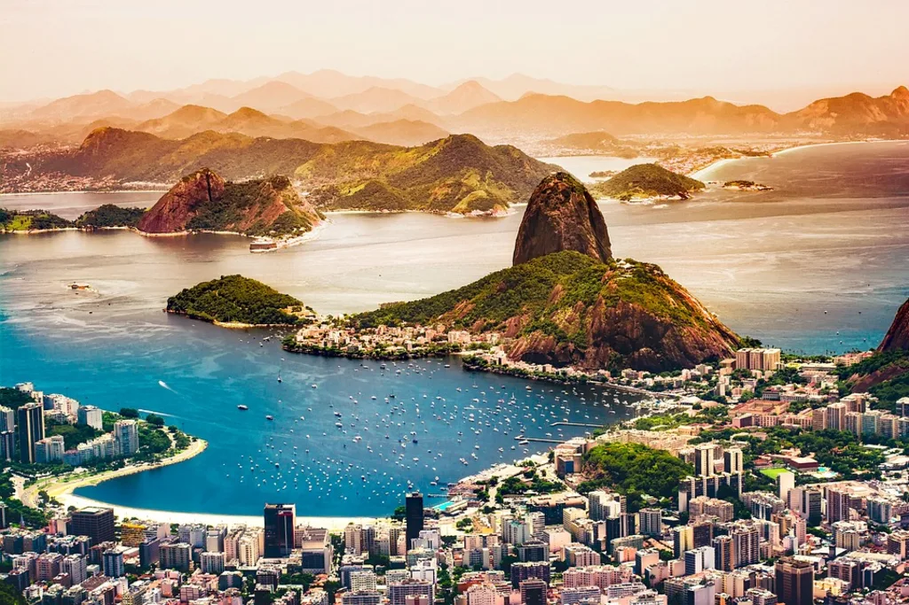
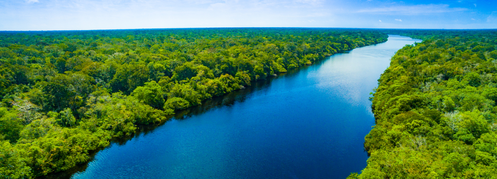

AmericaGo
Brazil
Brasil es un vasto y vibrante país en América del Sur, es un mosaico de culturas, paisajes y energía contagiosa. Desde las exuberantes selvas tropicales de la Amazonía hasta las playas doradas de su extensa costa, Brasil cautiva los sentidos con su diversidad y vitalidad. En sus ciudades, como la icónica Río de Janeiro con su icónico Cristo Redentor y el animado Carnaval, y São Paulo, un centro de negocios y cultura, se puede sentir la mezcla única de tradiciones indígenas, influencias africanas y una herencia colonial europea. La música, el baile y la gastronomía son elementos centrales de la identidad brasileña, y el samba y la bossa nova resuenan en sus calles.
Rio de Janeiro

Río de Janeiro, la "Cidade Maravilhosa", es una metrópolis fascinante ubicada en la costa sureste de Brasil. Conocida por su exuberante belleza natural, su energía contagiosa y su rica cultura, Río de Janeiro es un destino que ofrece una experiencia inolvidable para los visitantes. El símbolo más emblemático de la ciudad es el Cristo Redentor, una estatua imponente que se alza sobre el monte Corcovado y ofrece vistas panorámicas incomparables de la bahía de Guanabara, las playas doradas y los picos montañosos que enmarcan la ciudad. Las playas de Río, como Copacabana e Ipanema, son famosas en todo el mundo y son un lugar de encuentro para residentes y visitantes por igual, donde se disfruta del sol, el surf y la vibrante escena social.
Amazonia

La Amazonía, un vasto y exuberante pulmón verde que abarca varios países en América del Sur, es un reino de maravillas naturales y vida exótica. Sus selvas densas y misteriosas albergan una biodiversidad sin igual, donde cada rincón esconde secretos por descubrir. Explorar la Amazonía es sumergirse en un mundo de descubrimientos continuos, donde las plantas medicinales, las tribus indígenas y los ecosistemas únicos nos recuerdan la inmensidad de la naturaleza y su capacidad para sorprendernos. Desde la serenidad de un atardecer en la selva hasta el coro de sonidos que llenan el aire, la Amazonía es un viaje hacia lo desconocido y un recordatorio de la importancia de conservar este tesoro invaluable para las generaciones venideras.